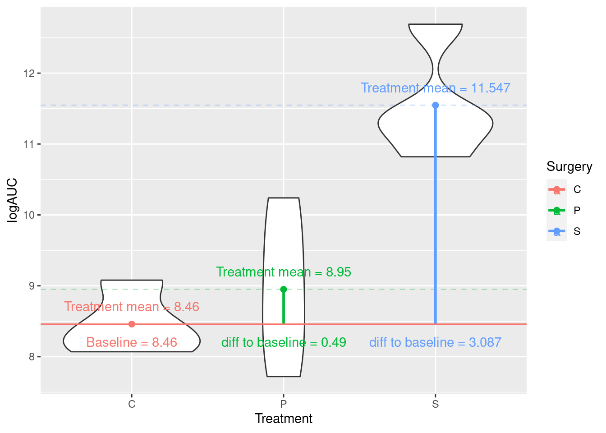

Introduction to Bayesian statistics
“Critical thinking is an active and ongoing process. It requires that we all think like Bayesians, updating our knowledge as new information comes in.”
Conditional probability
The probability of the event \(A\) occuring given that the event \(B\) has already occured is \[P(A∣B) = \frac{P(A \:\text{and}\: B)}{P(B)}\]. This is called a conditional probability. Note that \(P(A∣B)\) is not the same as \(P(B∣A)\)
An example
Rapid antigen (lateral flow) tests are rapid antigen tests used to detect SARS-COV-2 infection (COVID-19). They are very easy to use and a lot less uncomfortable than having a swab for a PCR taken!

In summary, the lateral flow test can show a positive (\(+\)) or a negative (\(-\)) result. The person taking the test either has (infected) or does not have COVID-19 (not infected).
It is reported that the average sensitivity of the Innova lateral flow tests is \(\sim 0.787\). Breaking this down means that given you have SARS-CoV-2 (Covid19) the chance of a positive lateral flow test is 0.787.
It was also reported that the specificity of this test was 0.997. That is, the chance of a negative test given that you do not have COVID-19 is 0.997.
This can be summarised as \(P( + | \text{infected}) = 0.787\) and \(P( -| \text{not infected}) = 0.997\)
What you would probably like to know is given that the test is positive, what is the probability that you have COVID-19? \(P( \text{infected}| +) = ?\)
Let’s assume that people in the population with COVID-19 is 10% (not far off the estimated % with Omicron in London a few weeks ago); that is, \(P(\text{infected}) = 0.1\).
But, what about \(P( \text{infected}| +) ?\)
Recall, \[P(A∣B) = \frac{P(A \:\text{and}\: B)}{P(B)}.\] So,
\[P( \text{infected}| +) = \frac{P(\text{infected} \:\text{and}\: +)}{P(+)}.\]
We have, \(P(\text{infected} \:\text{and}\: +) = P(\text{infected})\times P( + | \text{infected}) = 0.1 \times 0.787 = 0.0787.\)
So, \(P(+) = P(\text{infected} \:\text{and}\: +) + P(\text{clear} \:\text{and}\: +) = 0.0787 + ( 0.9 \times (1 - 0.997)) = 0.0787 + ( 0.9 \times 0.003) = 0.0787 + 0.0027 = 0.0814.\)
Therefore, \(P( \text{infected}| +) = \frac{ 0.0787}{0.0814} = 0.9668305.\)
Rearranging,
\[P( \text{infected}| +) = \frac{P( + | \text{infected})P(\text{infected})}{P(+)}.\]
Bayes’ rule
Bayes’ theorem, named after British mathematician Reverend Thomas Bayes, is a mathematical formula for determining conditional probability. His work and theorems were presented in An Essay towards solving a Problem in the Doctrine of Chances, this was read to the Royal Society in 1763 after his death.

Theorem, Bayes’ rule The conditional probability of the event \(A\) conditional on the event \(B\) is given by
\[P(B|A) = \frac{P(A|B)P(B)}{P(A)}\]
Let’s think of this in terms of our data and hypothesis:
\[P(\text{hypothesis}∣\text{data}) = \frac{P(\text{data} | \text{hypothesis} )P(\text{hypothesis})}{P(\text{data})}\]
Recall from the previous sections that our hypotheses relate to estimating parameter values (e.g., intercepts, differences in means, slopes etc ). The formula above (Bayes’ theorem) calculates the probability of the parameter(s), say \(\theta\), values given the data.
But what is the difference here to maximum likelihood estimation (i.e., MLE, the frequentist approach)? Taking an MLE approach assumes that the parameters are fixed (i.e., they have one true value); the parameters are unknown and are to be estimated. Using this approach we typically estimate a point estimate of the parameter of interest. Taking a Bayesian approach assumes that the parameters are not fixed. Instead, parameters are assumed to come from some fixed unknown distribution (i;e., a range of plausible values). This approach requires that we have some prior beliefs about the data (even if these beliefs are uninformative). This information is introduces a priori to the modelling framework.
\[P(B|A) = \frac{P(A|B)P(B)}{P(A)}\]
Schematically if \(A = \theta\) and \(B = \text{data}\), then the above translates to
\[P(\theta∣\text{data}) = \frac{P(\text{data} | \theta )P(\theta)}{P(\text{data})}\]
where \(P(\theta∣\text{data})\) represents what you know after having seen the data. This is called he posterior distribution and is the basis for inference, a distribution, possibly multivariate if more than one parameter (\(\theta\)). \(\frac{P(\text{data} | \theta )\) is the likelihood, think back to the previous section. \(P(\text{data})\) is called the prior distribution and represents what you know before seeing the data. The source of much discussion about the Bayesian approach. Now.
\[P(\text{data}) = \int P(\text{data}|\theta)P(\theta)d\theta\] is typically a high-dimensional integral, difficult if not impossible to calculate.
A simple example: lobsters
Again we consider data from the published article Influence of predator identity on the strength of predator avoidance responses in lobsters..
Recall that the authors were interested in how a juvenile lobster’s size was related to its vulnerability to predation. In total, 159 juvenile lobsters were collected from their natural habitat in the Gulf of Maine, USA, and the length of each lobster’s carapace (upper shell) was measured to the nearest 3 mm. The lobsters were then tethered to the ocean floor for 24 hours. Any missing lobsters were assumed to have been consumed by a predator, while the surviving lobsters were released.
We define large juvenile’s as those with carapace \(\geq\) 40 mm, and otherwise we class them as small.
library(tidyverse)
data <- read_csv("https://raw.githubusercontent.com/STATS-UOA/databunker/master/data/lobster.csv")
lobsters <- data %>%
mutate(size = ifelse(size >= 40, "large", "small")) %>%
mutate(survived = ifelse(survived == 0, "consumed", "alive")) %>%
group_by(size, survived) %>%
tally() %>%
pivot_wider(names_from = c(survived), values_from = n)| size | alive | consumed |
|---|---|---|
| large | 56 | 23 |
| small | 23 | 57 |
So, as before, 23 of the small juvenile lobsters survived predation from a total of 80. We are interested in the probability of survival, \(\theta\), for the general population of small lobsters. The obvious estimate is simply to take the ratio, \(\frac{23}{80} = 0.2875\) . But, what are the implied stats behind our common sense estimate?
Let \(S\) be the number alive after the 24 hours, then we can assume a Binomial distribution:
\[P(S = s) = {n \choose s} \theta^s (1 - \theta)^{n-s}\]
A frequentist approach would be to maximise the likelihood with respect to \(\theta\), see the previous section. This would result in the maximum likelihood estimate (MLE) of \(\hat{\theta} = \frac{23}{80} = 0.2875\)
Using a Bayesian approach we first need to start off with a prior distribution. This should reflect our prior beliefs about the parameter(s) of interest. We know \(\theta\) is a probability, so it is a continuous random variable and that lies between zero and one.
A suitable prior distribution might be the Beta defined on the interval [0, 1]. Therefore, we assume a priori \(\theta \sim \text{Beta(a, b)}\) so that \(P(\theta) = \theta^{a−1}(1 − \theta)^{b−1}\). See the plot below for the range of shapes a Beta distribution takes with different parameter values.

Recall from above that
\[P(\theta∣\text{data}) = \frac{P(\text{data} | \theta )P(\theta)}{P(\text{data})},\] which can be written as
\[P(\theta∣\text{data}) \propto P(\text{data} | \theta )P(\theta).\] The \(\propto\) means proportional to; basically this means we can ignore any terms not containing the parameters. Therefore,
\[\begin{array}{rl} P(\theta∣s) & \propto {n \choose s} \theta^s (1 - \theta)^{n-s}\theta^{a−1}(1 − \theta)^{b-1} \\ & \propto \theta^{(a+s)−1}(1 − \theta)^{(b+n−s)−1} \end{array}.\]
So the posterior distribution for survival is \(\theta | s \sim \text{Beta}(a + s, b + n - s).\)
We’re going to choose an uninformative prior (i.e., \(\text{Beta}(1, 1)\) above). So \(\theta_{\text{small}} \sim \text{Beta}(1 + 23, 1 + 80 - 23) = \text{Beta}(24, 58).\) We want the expected value of this, which already has an explicit form:
\[\mathbb{E}[\text{Beta}(a, b)] = \frac{a}{a + b} = \frac{24}{82}.\]
How does this compare to our MLE estimate from above?
Typically, Bayesian and frequentist estimates will always agree if there is sufficient data, so long as the likelihood is not explicitly ruled out by the prior.

Prior sensitivity
When choosing a prior distribution you should focus on what that prior means in the context of the research problem. Prior choice will influence the posterior distribution. Uninformative priors can be chosen if we wish to rely only on the likelihood (i.e., let the data speak for itself), which is itself subjective based on how/where data were collected. However, uninformative priors are in general unrealistic as equal weight is given to all values!
Prior choice and sensitivity is beyond the scope of this course; however, I would strongly encourage you to read the linked materials at the start of this module.
What would happen to our posterior distribution, above, if we were to choose a different prior?